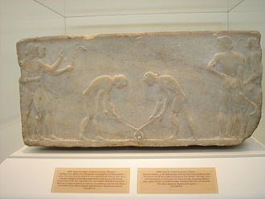

Hockey
Hockey is a sport in which two teams play against each other by trying to maneuver a ball or a puck into the opponent's goal using a hockey stick. There are many types of hockey such as bandy, field hockey and ice hockey.
Often one variation of the sport, such as field hockey or ice hockey, will predominate in a certain area and be known simply as "hockey".
The first recorded use of the word hockey is in the 1773 book Juvenile Sports and Pastimes, to Which Are Prefixed, Memoirs of the Author: Including a New Mode of Infant Education by Richard Johnson (Pseud. Master Michel Angelo), whose chapter XI was titled "New Improvements on the Game of Hockey". The belief that hockey was mentioned in a 1363 proclamation by King Edward III of England is based on modern translations of the proclamation, which was originally in Latin and explicitly forbade the games "Pilam Manualem, Pedivam, & Bacularem: & ad Canibucam & Gallorum Pugnam".The English historian and biographer John Strype did not use the word "hockey" when he translated the proclamation in 1720.
The word hockey itself is of unknown origin. One supposition is that it is a derivative of hoquet, a Middle French word for a shepherd's stave.[3] The curved, or "hooked" ends of the sticks used for hockey would indeed have resembled these staves. Another supposition derives from the known use of cork bungs, (stoppers) in place of wooden balls to play the game. The stoppers came from barrels containing "hock" ale, also called "hockey".

Games played with curved sticks and a ball can be found in the histories of many cultures. In Egypt, 4000-year-old carvings feature teams with sticks and a projectile, hurling dates to before 1272 BC in Ireland, and there is a depiction from approximately 600 BC in Ancient Greece, where the game may have been called because it was played with a horn or horn-like stick . In Inner Mongolia, the Dour people have been playing beikou, a game similar to modern field hockey, for about 1,000 years.
Most evidence of hockey-like games during the Middle Ages is found in legislation concerning sports and games. The Galway Statute enacted in Ireland in 1527 banned certain types of ball games, including games using "hooked" (written "hockey", similar to "hooky") sticks.
...at no time to use ne occupy the horlinge of the title balle with hockie stickes or staves, nor use no hande ball to play without walles, but only greate foot ball
By the 19th century, the various forms and divisions of historic games began to differentiate and coalesce into the individual sports defined today. Organizations dedicated to the codification of rules and regulations began to form, and national and international bodies sprang up to manage domestic and international competition.
Reference:
Wikipedia
News:-